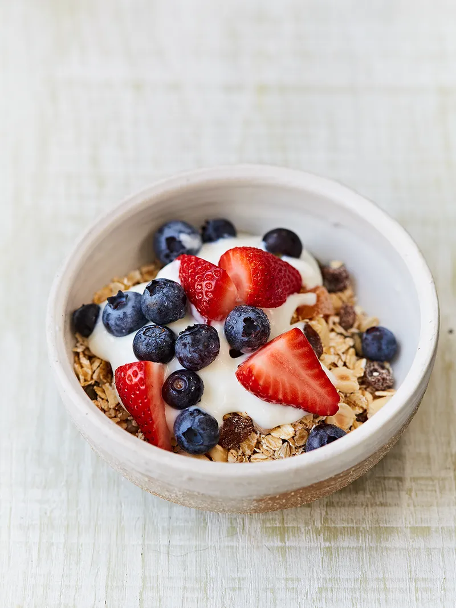

OAT FRUIT CEREAL

D E S C R I P T I O N
Eating a tasty, nutritious breakfast is a great way to help kick-start your day the best way you can. Make a big batch of healthy cereal, then store it in an airtight container for up to four weeks. I’ve given you two great ways to serve it here, but feel free to come up with your own ideas.
I N G R E D I E N T S
- Dried Fruit
- Unsalted Nuts
- Mixed Seeds
- Porridge Oats
- Cinnamon
- Milk or Natural Yoghurt
S T E P S
- To make the basic cereal, roughly chop any larger dried fruit and nuts, then place into a large bowl along with the seeds, oats and cinnamon (if using).
- Tip into an airtight container
- Now you have two choices. To serve your cereal as it is, place a handful of cereal (roughly 50g) per person into your serving bowls.
- Add milk or natural yoghurt and chopped fresh fruit, if you like, then serve.
- To make bircher muesli for 4 people, add 200g of the cereal to a large bowl.
- Place a box grater on a board, then coarsely grate the apple, discarding the core. Add it to your oaty cereal.
- Pour over enough milk to cover, then mix well.
- Cover the bowl with clingfilm, then pop in the fridge to soak overnight.
- When you’re ready to eat, give the bircher a good stir, divide between your bowls, then serve with chopped fresh fruit, if you like.
Return to top
Return to main page